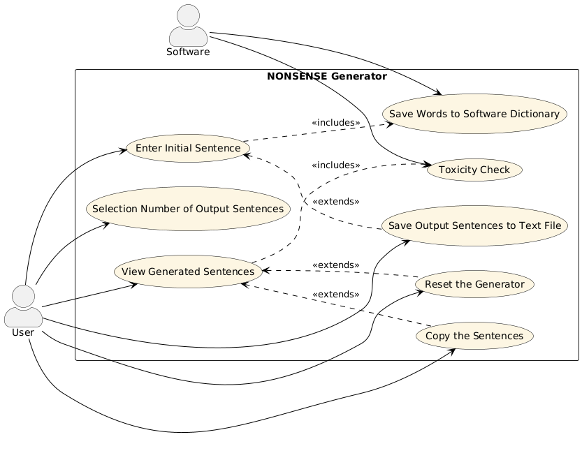

Manuale
Introduzione
L'applicazione Klotski permette di giocare all’omonimo gioco: un puzzle a blocchi scorrevoli nel quale l'obiettivo è spostare un blocco speciale in una posizione predefinita. La difficoltà sta nel muovere ingegnosamente gli altri pezzi all’interno del piano di gioco per far strada a quello speciale, e riuscire a fargli raggiungere la posizione finale nel minor numero di mosse possibile.
Tecnologie utilizzate
| Nome | Versione | Descrizione |
|---|---|---|
| Java | 20 | Ambiente e linguaggio di programmazione utilizzato per sviluppare l’applicazione. |
| JavaFX | 20.0.1 | Piattaforma per lo sviluppo di applicazioni client, basata su Java. |
| JFoenix | 9.0.1 | Libreria Java open source che implementa Google Material Design utilizzando componenti Java. |
| Jackson | 2.12.3 | Libreria Java per la serializzazione di oggetti Java in oggetti JSON e viceversa. |
| JUnit | 5.9.1 | Framework per il testing automatico di classi Java. |
| SceneBuilder | 19.0.0 | Software per la costruzione di una GUI JavaFX tramite "drag and drop". |
Si consiglia, alla fine, di consultare anche il Javadoc allegato per capire al meglio l'integrazione delle librerie.
Specifiche
undo()
La sequenza numerata all'interno dei costrutti alt non è da intendersi come rigorosa,
in quanto vengono eseguiti alternativamente, ma è indicativa.
reset()
")
richiedi_NBM()
La sequenza numerata all'interno dei costrutti alt non è da intendersi come rigorosa,
in quanto vengono eseguiti alternativamente, ma è indicativa.
")
Test
Unit Tests Results
Clicca per vedere i risultati degli Unit Tests
System Tests
Clicca per vedere i System Tests
JavaDoc
Clicca per vedere il JavaDoc